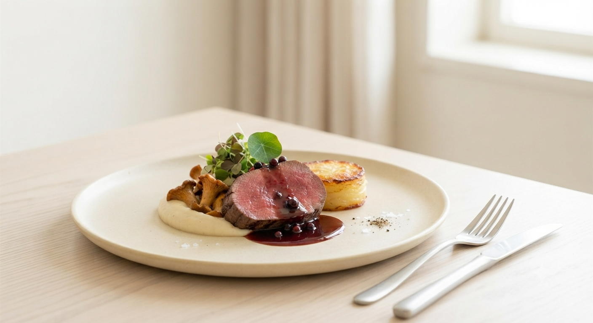
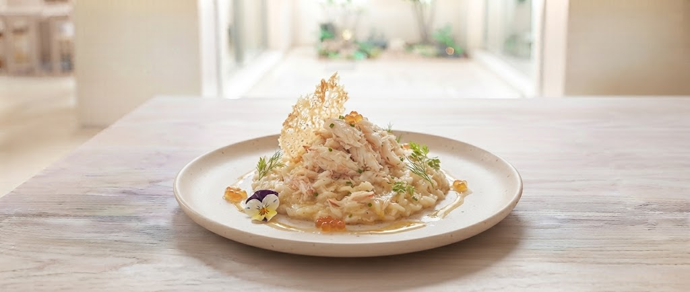
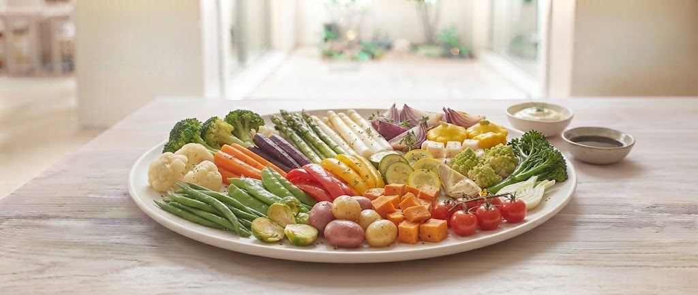
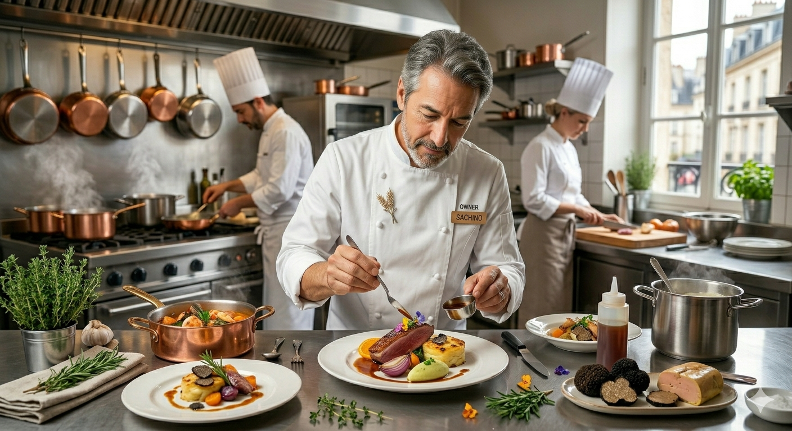

Sapporo, Hokkaido
ミシュラン三ツ星、その極致へ。
MICHELIN GUIDE SAPPORO
ミシュラン三ツ星獲得
WORLD COOKING CONCURS
世界料理コンクール金賞
GOURMET REVIEW
札幌フレンチ満足度 No.1
すべての食材を北海道産にこだわり、
ホタテ、十勝牛、冬野菜、王様野菜など地元素材を美しく調理。
一口ごとに味が変わる23〜30種類の野菜サラダは、
食べる楽しみを再発見させる、私たちの誇りです。

蟹の風味が凝縮された濃厚なソース。バケットの旨々パリパリ感とのコントラストは、パンが主役かと思えるほど。ミシュラン三ツ星ならではの演出と共にお楽しみください。
都会の高級店では味わえない、朝採れの鮮度。北海道中の生産者を訪ね歩き、その時期に最も力強い食材だけを。サラダに23〜30種類の野菜を使い、食べるごとに表情を変える工夫を凝らしています。


1951年、北海道稚内市生まれ。フランス修行を経て1984年、札幌円山で「モリエール」を開業。現在は宮の丘の地で、ミシュラン三ツ星の名店として君臨する。
2008年洞爺湖サミットでの料理提供、そして農林水産省「料理マスターズ」認定。地元食材を活かした「地産地消」の先駆者として、北海道フレンチの象徴的な存在であり続けています。
★★★★★
「毛蟹のリゾットは、蟹の風味がしっかり出ていて最高でした。鹿のジビエは松でスモークされていて、香り付けが良く合っていました。」
★★★★★
「スタッフのみなさんもとても対応も良く、一流のレストランだと感じることができました。札幌フレンチだとおすすめしたいお店です。」
★★★★☆
「ホールの方々のお声掛けのおもてなし感は硬すぎず過ごしやすい雰囲気にしてくれていて最高でした。」
モリエールでの体験を、お食事のその先へ。
ご来店いただいたお客様により深く美味の余韻をお楽しみいただくため、新たなサービスを準備しております。
お食事の余韻に浸る特別な仕掛け。お会計時に「QRコード付きメッセージカード」をお渡しします。スマートフォンで読み込むと、当日お召し上がりいただいた一皿のこだわりや裏話を、シェフが自ら語る限定解説動画をお楽しみいただけます。
シェフ中道博の料理人としての歩み、円山で創業してからミシュラン三ツ星に至る歴史、そして北海道の生産者との深い絆を編み込んだオリジナル冊子（ZINE）を発行いたします。ご来店の記念としてお持ち帰りいただけます。
北海道各地の朝採れ食材を届けてくれる農家や漁師たちの物語と、ご家庭でも北海道の旬を美味しく愉しむためのモリエール流・ワンポイントアプローチを収めたスペシャルコンテンツ。限定Webページにて順次公開予定です。